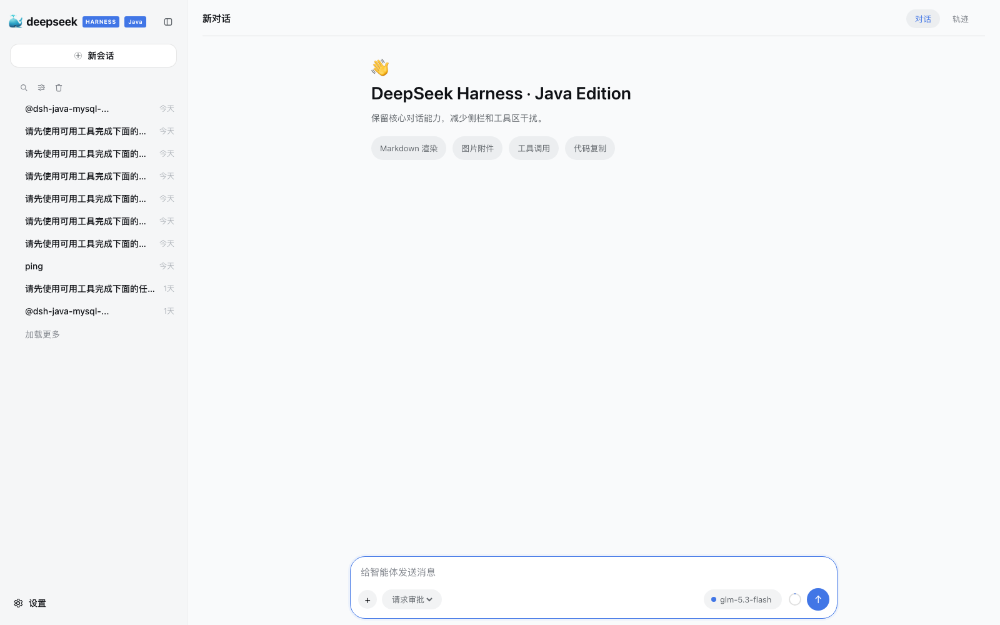
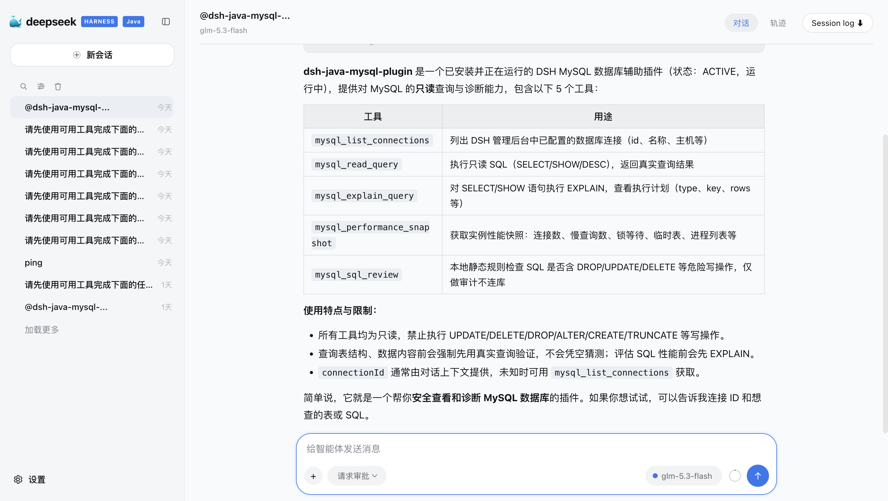
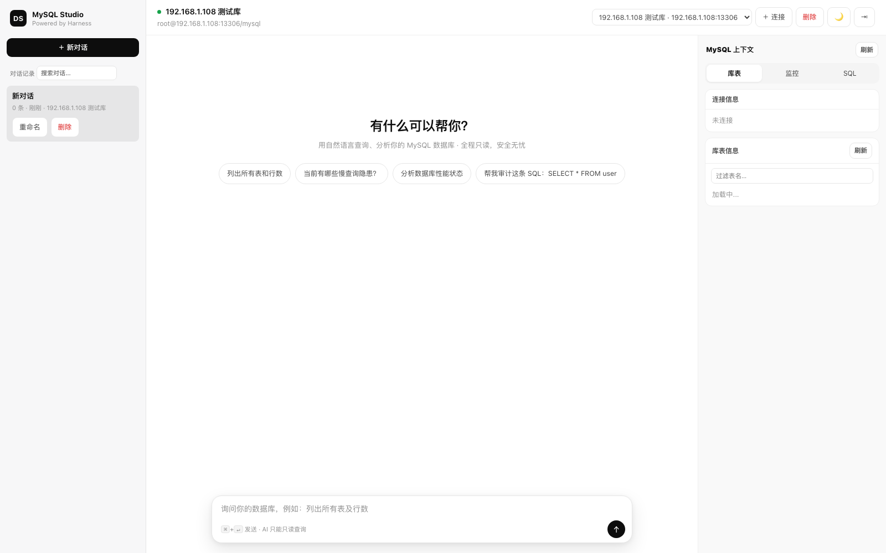

零依赖开箱即用
内置 Temurin JRE 17 与 Spring Boot 服务端，不要求安装 JDK、MySQL，数据落在本地应用目录。
以「一切皆可插件」为设计思想：ReAct 循环、工具系统、审批治理与事件溯源构成运行时内核；能力边界由插件无限扩展——Java Native 基于 ClassLoader 隔离加载、动态插拔，Node Bridge 与 MCP 生态即装即用。
Domain 核心 · 插件只依赖轻量 Types 契约一款开箱即用的「数字人」AI 智能体桌面端：内置 Java 17 运行时与 DSH Java Agent Runtime 服务端，无需安装 JDK 与数据库，装完即用。单个数字人胜任编码、绘图、文档等多场景工作，多个数字人经 dsh.v1 / A2A 跨端组建协作团队。
安装后应用自动拉起内置智能体服务，在「设置 → 模型设置」配置模型即可开始对话；新版本支持应用内一键自动更新。
内置 Temurin JRE 17 与 Spring Boot 服务端，不要求安装 JDK、MySQL，数据落在本地应用目录。
单数字人多场景工作；多数字人经 dsh.v1 / A2A 双协议接入，Planner 自动分工编排任务。
Word / Excel / Markdown / ECharts / draw.io 产物生成，消息内直接预览、编辑与另存。
Skills、MCP Servers、CLI 命令随需扩展；发现新版本可在应用内一键下载安装并重启。
「一键使用」单容器拉起 Harness 运行时；「本地 JAR」下载运行包后在 JDK 17 中直接启动；「插件安装」用标准部署脚本启动 Harness 与 2D Weekend Mall，再从 GitHub 下载商城 JAR 并在插件管理中安装。详细步骤与 MySQL 库表导入见 使用教程 · 部署与安全。
单容器最小体验，打开 http://localhost:8090 即可进入控制台。
docker run -d \
--name dsh-java-web \
-p 8090:8090 \
registry.cn-hangzhou.aliyuncs.com/xfg-studio/deepseek-harness-java:0.1.6.4适合最快体验；需要持久化数据、插件与配套案例时，请切换到「插件安装 · 标准部署包」。
部署后配置模型：打开 Harness，进入「设置 → 模型设置 → 添加模型」，填写模型服务地址、模型名称和 API Key，保存后即可开始对话。
下载运行 JAR 到启动脚本同目录，使用 JDK 17 执行。无需 Docker 和 MySQL，数据使用 H2 文件库。
下载 JAR：
https://drive.weixin.qq.com/s?k=ACMA4AfQABUnIBrQ39
curl -fsSLO https://dsh-java.xiaofuge.cn/scripts/start-local-jar.sh
chmod +x start-local-jar.sh
./start-local-jar.sh如果 JAR 不在脚本同目录，可用 JAR_PATH=/path/to/deepseek-harness-java.jar ./start-local-jar.sh 指定路径。
部署后配置模型：打开 Harness，进入「设置 → 模型设置 → 添加模型」，填写模型服务地址、模型名称和 API Key，保存后即可开始对话。
执行标准部署脚本，拉起 Harness 与 2D Weekend Mall，并持久化数据、插件和存储目录。
# 下载并执行标准部署脚本
curl -fsSLO https://dsh-java.xiaofuge.cn/scripts/deploy-standard.sh
chmod +x deploy-standard.sh
./deploy-standard.sh下载标准部署脚本；脚本默认使用商城服务令牌 mall-internal-demo-token，可通过环境变量覆盖。
部署后配置模型：打开 Harness，进入「设置 → 模型设置 → 添加模型」，填写模型服务地址、模型名称和 API Key，保存后再开始对话。
部署完成后下载商城插件，在 deepseek-harness-java 服务的插件管理页面上传并启用。
下载：
https://github.com/fuzhengwei/2d-weekend-mall/blob/main/docs/mall-agent-plugin-1.0.0-SNAPSHOT.jar
打开 http://127.0.0.1:8090
设置 -> 插件管理 -> 选择 JAR -> 安装并启用商城地址：http://127.0.0.1:18080；商城服务令牌必须与脚本输出的令牌一致。
面向本地智能体工作台、企业内部扩展平台与任务自动化系统。当前定位是单实例运行时，而非分布式多租户 SaaS。
ReactLoopAgent 驱动模型输出、工具调用、结果回填与续步，单 turn 上限 50 步。
内置文件、Shell、Web 搜索/抓取和用户提问工具；统一 ToolCallExecutor，并支持 PRE/POST Hook。
Java Native 使用 URLClassLoader 隔离，Node Bridge 使用 sidecar JSON-RPC，另支持 MCP stdio 工具。
提交期权限矩阵评估，高风险 Shell、写文件、插件和子进程默认进入人工审批。
会话、任务、目标、审批与模型设置落库；默认 MySQL，standalone profile 可切换 H2 文件库。
原生 JS 实现，本地化 Markdown、代码高亮与 XSS 净化，无前端构建链。
打开控制台即可管理会话、工作区、模型、插件与审批，不需要额外构建前端。



它们不是演示草图，而是可以直接构建、安装插件并跑通工具调用的项目。
MySQL 管理后台 + AI 数据库助手。连接配置、表浏览、只读查询、执行计划、性能快照和 SQL 风险审计都可在本地闭环。
PC 虚拟商城与智能客服插件。商品搜索、购物车、下单、支付、订单和物流跟踪在浏览器闭环，客服能力由 Harness 插件提供。
配套 18 章学习教程与上手指引，从十分钟跑起来，到 ReAct 循环、事件溯源、插件机制、MCP 与审批治理。
DSH Java 的能力边界由插件决定。为自己开发插件，或发布到 GitHub 与社区共享——只需一个标签，就会被社区收录。
实现 SPI 契约并注册工具，支持 Java Native、Node Bridge 与 MCP stdio 三种模式。
打包 JAR 后通过 /api/harness/plugins/install 安装激活，在控制台跑通工具调用。
把插件源码推送到公开仓库，写好 README 与安装说明。
给仓库添加 dsh-plugin-java 标签（topic），即会被社区插件列表自动收录。
GitHub topic 是社区插件的统一收录入口。任何人为仓库添加 dsh-plugin-java 标签后，插件就会出现在社区主题页，被其他开发者发现、安装和使用。
# 方式一：仓库主页 About → Topics 添加 dsh-plugin-java
# 方式二：GitHub CLI 一行搞定
gh repo edit --add-topic dsh-plugin-javadeepseek-harness-java 源码目前通过社群提供。社群包含学习教程、插件开发实践、部署答疑和使用辅助，帮助你更快完成企业内落地。